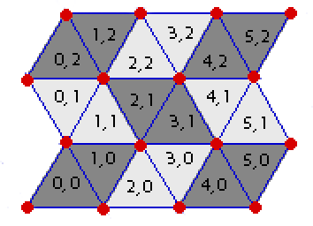

In the game of Rhombinoes, you have a board made up entirely of equilateral trianges (see the image), some of which are "live" and some are "dead". Your goal is to place down as many rhombinoes ("rhombus"-shaped pieces) as possible on the board. Each rhombino should exactly cover two "adjacent" live triangles that have a common side, and no two rhombinoes can use the same triangle.
Given the description of the live and dead triangles of a Rhombino board, what is the maximum number of rhombinoes you can simultaneously place down on the board?
Each triangle in the board has a pair of coordinates (x, y). The bottom-left triangle has coordinates (0, 0) and will always be a triangle with its tip pointed upward. For any given triangle with coordinates (x, y), the triangle adjacent to it on its right-side (if any) has coordinates (x+1, y), and the triangle adjacent to it on its top-side (if any) has coordinates (x, y+1). Left-side and bottom-side adjacency are defined similarly.
Each board has a width W and a height H. A board with width W and height H is the board which consists of all triangles with coordinates (x, y) such that 0 ≤ x < W and 0 ≤ y < H. For example, the game board in the image has width 6 and height 3.
(See the image for clarification.)
The first line of input contains three space-separated integers W, H, and K.
W is the width of the board, H is the height, and K is the number of dead triangles on the board (1 ≤ W ≤ 100, 1 ≤ H ≤ 100, 1 ≤ K ≤ W*H ≤ 1000).
Exactly K lines will follow. Each such line will contain a pair of space-separated integers x and y (0 ≤ x < W, 0 ≤ y < H), indicating that the triangle with coordinates (x,y) is a dead triangle. All other triangles are live.
Output a line containing a single integer, the maximum number of rhombinoes you can simultaneously place down on the board.
6 3 4 1 1 2 2 4 1 3 0
5
This is the board in the image, with cells (1, 1), (2, 2), (4, 1), and (3, 0) dead.